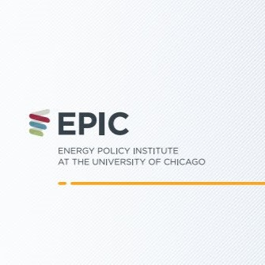
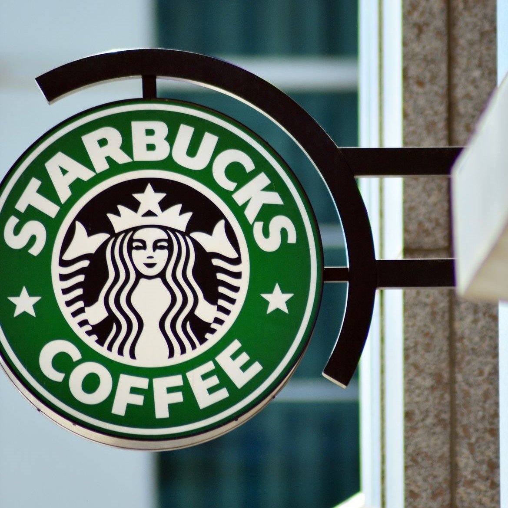
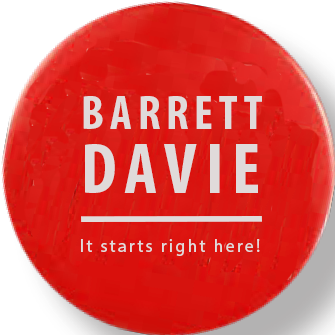
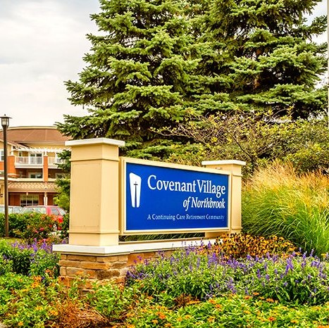
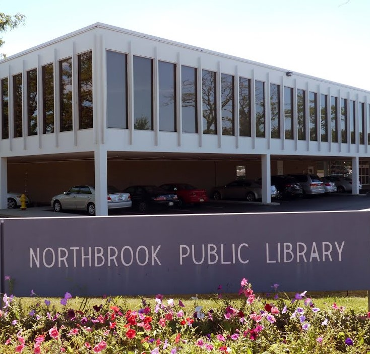

Work
My work experience gives me the communication, organization, and technical skills I need to succeed.
Resume
View my resume for a detailed look at my most recent work experience:
Download
History

- Hosted a movie screening of The True Cost and collected donations as a member of the Programming Committee
- Planned events including study breaks and socials to increase connections with students on campus
- Met bi-weekly to discuss Energy Policy Institute events showcasing research in energy and the environment

- Served drinks and food to customers while maintaining a clean and well-stocked store
- Processed an average of 20 sales per hour through the counter and the drive-through
- Managed inventory by preparing ingredients for drinks and cycling food items for sale

- Canvassed door-to-door to introduce district residents to Davie's agenda and goals for Illinois
- Prepared literature explaining Davie's platform and voter information
- Conducted policy research to inform Davie's agenda and policy positions

- Greeted and served retirement home residents by taking orders, delivering food, and processing payment
- Organized and hosted parties spanning multiple rooms and involving 30-100 guests and residents
- Prepared the dining section and back-of-house for dining hours by cleaning and maintaining service stations

- Designed, developed, and published media to publicize library services on Instagram and the library website
- Planned hour-long STEM courses to teach elementary and middle school-aged students programming and math
- Publicized the library’s community garden as a way for kids aged 4-7 to begin their relationship with the library